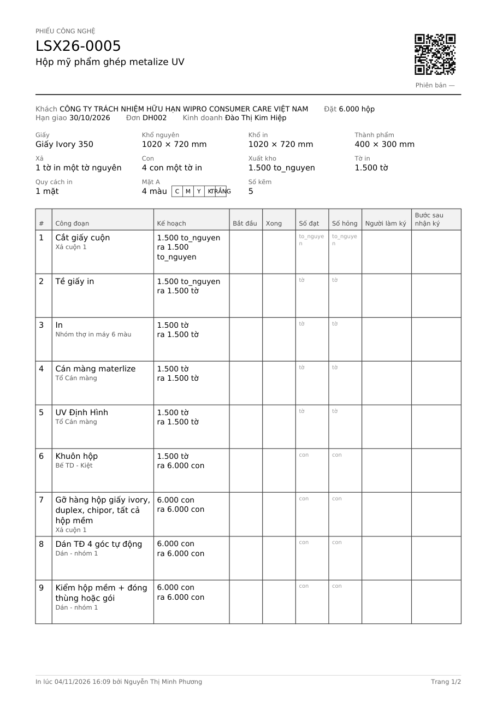
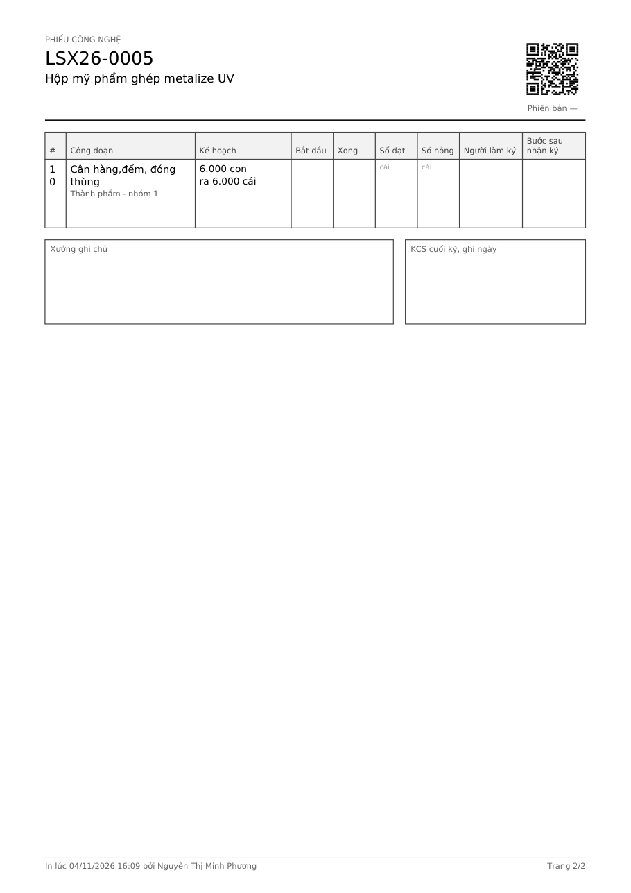
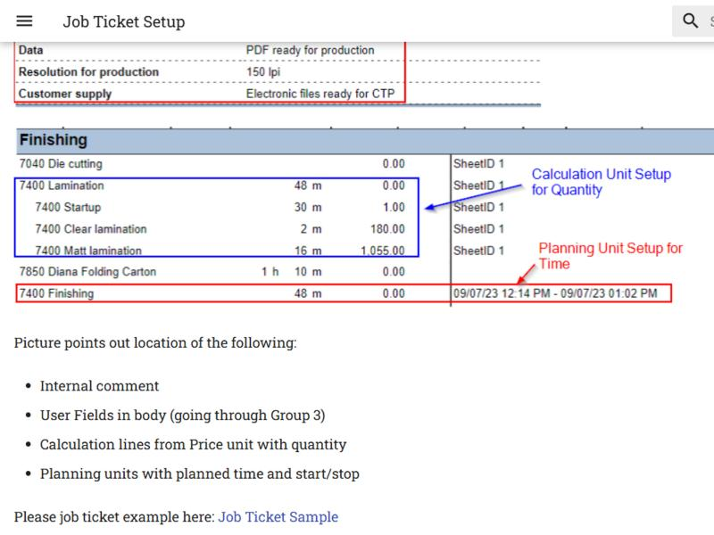
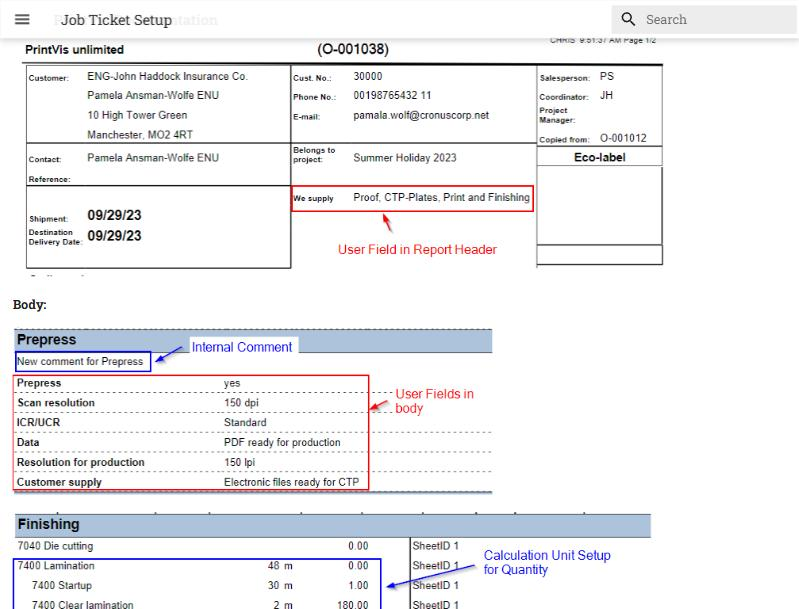

Phiếu công nghệ làm lại, 3 phương án
Phiếu A4 in từ nút In phiếu công nghệ ở ngăn lệnh, đi theo hàng xuống xưởng. Cả ba phương án dựng bằng số thật của hai lệnh 10 bước trên DB dev: LSX26-0005 hộp mỹ phẩm (đi thẳng một mạch) và LSX26-0006 thùng carton sóng B (Tề sóng chạy song song, Bồi chờ hai nhánh). Trang vẽ đúng khổ 210 × 297 mm.
Chỗ tô vàng là giả định: dữ liệu thật chưa có (hai lệnh còn nháp nên chưa có phiên bản và chưa xếp máy), hoặc phải làm thêm phần mềm mới có.
Bản đang in


Chỗ dở thấy được trên bản in thật:
- Lệnh 10 bước tràn sang trang 2 chỉ vì một dòng. Mỗi dòng cao cố định 17 mm nên một trang chỉ chứa 9 bước, mà hộp và thùng carton của xưởng thường 9 đến 11 bước.
- In mã đơn vị trần "to_nguyen" ở cột Kế hoạch, ô Xuất kho và chữ mờ trong ô Số đạt. Nguyên nhân: công đoạn hệ thống Cắt giấy cuộn và Tề giấy in khai đơn vị mã to_nguyen, nhưng danh mục Đơn vị trên DB dev không còn dòng to_nguyen nên tra tên không ra.
- Số bước 10 bị gãy thành hai dòng "1 / 0" vì cột # chỉ rộng 7 mm.
- Ô mực cố định độ rộng nên "TRẮNG" tràn ra ngoài khung, "PANTONE 186C" của lệnh thùng còn tràn tệ hơn.
- Số màu lệch với số mực trên cả hai lệnh: LSX26-0005 ghi "4 màu" nhưng có 5 mực (C M Y K TRẮNG), LSX26-0006 ghi "1 màu" nhưng có K và PANTONE 186C. Số kẽm thì khớp số mực.
- Không có vật tư từng bước: tổ Xả cuộn không thấy phải lấy 401,63 kg Giấy Ivory 350, tổ Tề sóng không thấy cần 1.500 tờ Sóng B nâu 140/140.
- Lệnh có nhánh thì bước nào cũng in "Làm sau bước X", kể cả bước chỉ chờ đúng dòng ngay trên nó. Chỗ đáng nói chỉ có hai: Tề sóng làm ngay từ đầu, Bồi chờ cả In và Tề sóng.
Tham khảo




Áp cho cả ba
- 10 bước vừa một trang A4 dọc. Lệnh dài hơn mới sang trang 2, và trang nào cũng có mã lệnh, phiên bản, QR như bây giờ.
- Đơn vị luôn ra chữ: "1.500 tờ nguyên". Phần mềm sẽ biết sẵn tên của các đơn vị hệ thống (tờ nguyên, tờ, con, cái), không phụ thuộc danh mục còn dòng đó hay không.
- Ô mực rộng theo chữ. Bỏ con số "N màu" vì đang lệch; dãy mực và số kẽm đã đủ nói.
- Bước có vật tư thì in thêm dòng "Lấy" với tên hàng và số lượng, đúng số đang hiện ở Kế hoạch vật tư.
- "Làm sau bước" chỉ in ở bước không chờ đúng dòng ngay trên nó. Bước không chờ ai mà không đứng đầu thì in "Làm ngay từ đầu".
- Giữ như cũ: không một số tiền nào, không chữ đậm, in laser đen trắng vẫn đọc được, thiếu thì im (hạn SX, ghi chú kỹ thuật, định lượng chưa khai đều không in).
- Máy của từng bước in khi lệnh đã xếp lịch. Hai lệnh mẫu chưa xếp nên chỉ có tổ.
A. Giữ nguyên khuôn phiếu đang in (đầu phiếu, lưới thông số, bảng bước, hai ô ký), chỉ sửa cho gọn. Dòng bước hạ từ 17 mm xuống 12 mm, vẫn đủ chỗ viết tay một dòng số và một chữ ký. Lưới thông số 5 cột thay 4 cột nên bớt một hàng.
Hợp khi: tổ đã quen phiếu hiện tại, chỉ muốn hết tràn trang và hết chữ lạ. Đổi ít nhất trong ba phương án.
B. Bỏ lưới thông số chung ở đầu phiếu. Bảng bước chia thành ba khâu: Chuẩn bị giấy, In, Sau in. Thông số khâu nào nằm ngay trên các bước của khâu đó, bước giữ số gốc nên lệnh thùng đọc 1, 2, 4 rồi mới tới 3 (Tề sóng là khâu chuẩn bị giấy, chạy song song với In): tổ xả cuộn đọc giấy, khổ nguyên, xuất kho; thợ in đọc khổ in, mực, kẽm; tổ bế dán đọc thành phẩm, số con, khuôn. Mỗi thông tin nói một lần, đúng chỗ người cần đọc.
Hợp khi: phiếu chuyền tay qua nhiều tổ và mỗi tổ chỉ cần phần của mình. Nhóm khâu lấy từ nhóm của công đoạn (Trước in, In, Gia công sau in) đã khai ở danh mục Công đoạn.
C. Đầu phiếu và thông số như A. Các bước thành thẻ xếp hai cột, mỗi thẻ có ô Bắt đầu, Xong, Số đạt, Số hỏng, Người làm ký, Bước sau nhận ký. Ô KCS cuối là thẻ cuối cùng. Thẻ có QR riêng của bước: tổ trưởng quét là mở đúng bước đó trên Việc của tổ để ghi sản lượng, khỏi tìm lệnh.
Hợp khi: muốn xưởng ghi số trên máy ngay tại chỗ, giấy chỉ còn để đối chiếu. QR từng bước cần làm thêm đường mở thẳng một bước trên Việc của tổ (hiện QR chỉ mở hồ sơ lệnh), nên phương án này tốn công nhất.